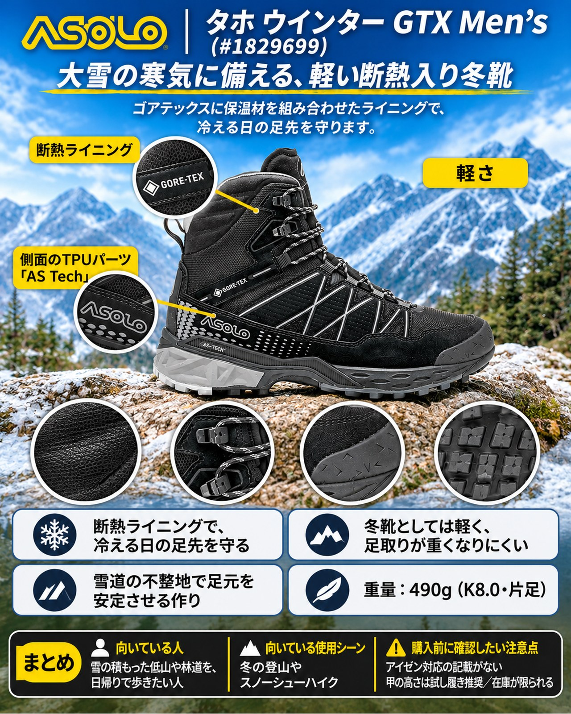

19日からは冬型の気圧配置となり、山は大雪のおそれがあります。高山はすでに氷点下の冬山入りで、近郊の低山でも雪や冷え込みの中を歩く日が増えてきます。今回紹介するアゾロの「タホ ウインター GTX Men's」は、断熱材入りのゴアテックスライニングを備えた軽量トレッキングブーツです。25L程度の荷物での登山やスノーシューハイクを想定したモデルとされています。重装備の雪山登山靴ではなく、「雪の積もった低山や林道を、冷えずに歩きたい」という日帰りハイカーに向く1足です。
導入：どんな人・どんな山行に向くか
19日からは冬型の気圧配置となり、山は大雪のおそれがあります。高山はすでに氷点下の冬山入りで、近郊の低山でも雪や冷え込みの中を歩く日が増えてきます。今回紹介するアゾロの「タホ ウインター GTX Men's」は、断熱材入りのゴアテックスライニングを備えた軽量トレッキングブーツです。25L程度の荷物での登山やスノーシューハイクを想定したモデルとされています。重装備の雪山登山靴ではなく、「雪の積もった低山や林道を、冷えずに歩きたい」という日帰りハイカーに向く1足です。
基本スペック
| 項目 | 内容 |
|---|---|
| 商品名 | タホ ウインター GTX Men's（ASOLO） |
| 品番 | #1829699 |
| 重量 | 490g（K8.0・片足） |
| アッパー | 撥水スエード、ポリエステル、TPU |
| ライニング | ゴアテックス インシュレーテッド コンフォート（断熱材入り） |
| ミッドソール | EVA（側面にTPUのサポートパーツ「AS Tech」） |
| アウトソール | アゾロクロス |
| 快適使用温度 | -15°C（アゾロ社表記） |
| サイズ | 25.0cm〜29.5cm（0.5cm刻み・ワイズはレギュラー） |
| カラー | ブラック×ブラック |
| 価格 | 33,000円（税込） |
断熱ライニングで、冷える日の足先を守る
ゴアテックスに保温材を組み合わせたライニングが、足先の冷えを抑えます。防水透湿の「ゴアテックス インシュレーテッド コンフォート」で、快適使用温度はアゾロ社の表記で-15°Cです。
冬靴としては軽く、足取りが重くなりにくい
雪の上でも、一歩ごとの足上げが重くなりにくい作りです。片足490g（K8.0）で、冬靴でも足取りを軽く保てます。
雪道の不整地で足元を安定させる作り
側面のTPUパーツ「AS Tech」が、ぐらつきを抑えます。かかとを包む形のヒールと、つま先・かかとが反り上がった形状が接地と蹴り出しを助けます。つま先にはTPUのキャップが付いています。
デメリット・注意点
- アイゼン対応の記載がない：アイゼンの装着可否についての記載を確認できませんでした。凍結した急斜面や高山の雪稜に使う靴ではないと考え、そうした山行には専用の冬山登山靴を選んでください。
- 甲の高さは試し履き推奨：冬は厚い靴下を合わせることが多いので、店頭で冬用の靴下を履いて確かめるのが安心です。
- 在庫が限られる：サイズによって完売や入荷予定なしのものがあります。カラーもブラック×ブラックのみです。
向いている人・向いていない人
◎向いている人
- 雪の積もった低山や林道を、日帰りで歩きたい人
- スノーシューハイクに使える、暖かく軽い靴を探している人
- 冬靴の重さが苦手で、足取りを軽くしたい人
△向いていない人
- アイゼンを付けて高山の雪稜や凍結した急斜面に行きたい人
- 甲高で、厚手の靴下と合わせると窮屈になりやすい人
まとめ
アゾロ「タホ ウインター GTX Men's」は、断熱材入りのゴアテックスライニングと片足490gの軽さを両立した冬用トレッキングブーツです。寒気が入って雪の日が増えるこれからの季節に、低山の雪道やスノーシューハイクを快適に歩きたい人の選択肢になります。一方で、本格的な冬山向けの靴ではない点と、サイズの在庫が限られる点には注意が必要です。気になる人は、冬用の靴下を持って試し履きをしてみてください。
この記事で紹介した商品
価格・重量・在庫は各ブランド公式サイトの記載（確認日つき）にもとづきます。商品を押すと、購入先を選べます。
この記事にはアフィリエイト広告が含まれます。リンク先での購入により、当サイトが報酬を受け取る場合があります。山行の前には、最新の気象とルートの状況を必ずご確認ください。